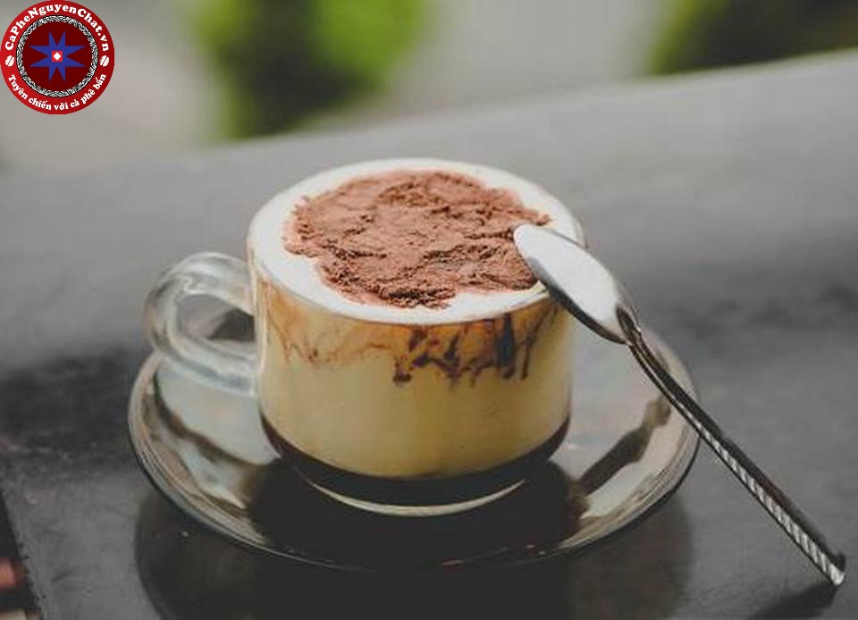

Example Cafe

Example Cafe phục vụ thức ăn hữu cơ
có nguồn gốc tại địa phương
Với tầm nhìn tuyệt đẹp ra quang cảnh đại dương,
Example Cafe Mang đến môi trường hoàn hảo để thư giãn.
Thực đơn của chúng tôi cung cấp thức ăn dùng cho bữa sáng,
trưa và tối, kể cả thức ăn chay.
Đến với Example Cafe, bạn có thể nhâm nhi một ly cafe nóng,
hay một ly sinh tố mát lạnh, bạn khong bao giờ cần phải cảm
thấy vội vã và có thể thư giãn với bạn bè hoặc ngắm cảnh đại dương.
Buổi tối đặc biệt cuối tuần này
Cuối tuần này, chúng tôi tiếp tục phục vụ các món ăn và thức uống
đặc biệt theo phong cách Anh sang trọng với các món làm hoàn toàn
bằng trứng, kem và bơ.